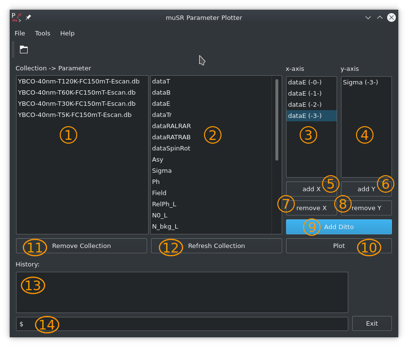
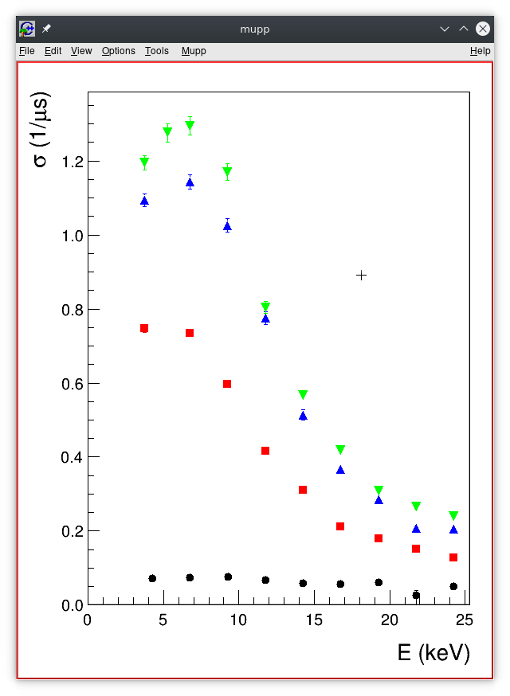

mupp - μSR Parameter Plotter¶
mupp is a little helper program which allows to quickly plot a collection of msr-file parameters,
as for instance generated by msr2data. It can handle db- and dat-files.
Also a collection of msr-files can be invoked. mupp is heavily inspired by μView (see
here).
mupp can be operated from within as graphical user interface or via a command line scripting interface.
The mupp GUI can be invoked either directly from the command line or from within musredit.
The Graphical User Interface¶
A typical setting could look like this
shows the list of loaded collections. A collection is defined as
db- ordat-file (typically the output from msr2data). If you call the open-dialog and select a collection ofmsr-files,muppwill callmsr2dataand tries to generate a collection on-the-fly.in this list, the data-tags of the currently selected collection is presented. The data-tags can be directly dragged over to the
x- andy-axis list. Another way is to select the data-tag wished and clickadd Xto add the selected data-tag to thex-axis list. Analogous it is done for they-axis.x-axis list. The labels are followed by(-X-)where the numberXcorresponds to the selection it corresponds to. The numbering of the collection is as given in the collection list.y-axis list. The labels are followed by(-X-)where the numberXcorresponds to the selection it corresponds to. The numbering of the collection is as given in the collection list.add Xallows to add the currently selected data-tag to thex-axis list.add Yallows to add the currently selected data-tag to they-axis list.remove Xwill remove the selectedx-axis tag.remove Ywill remove the selectedy-axis tag.Often one would like to compare trends of different settings. In the above example each collections holds an energy scans for a given temperature. Each collection is measured at a different temperature. Now, instead of adding
x- andy-axis tags for each collection, you can do the following: you addx- andy-axis data-tags for the first collection. Afterwards you select all the other collections of interest and click onAdd Ditto.muppwill then add the correspondingx- andy-axis data-tags accordingly. This is less error prone and quicker!Clicking the
Plotbutton will invokemupp_plot(aROOTbased application) which will present the data, as shown hereRemove Collection: will remove the selected collectionRefresh Collection: will reload the collection (db- ordat-file). This is often useful during beamtime where the collection is growing run-by-run.This is the script command line. Currently it allows to perform the tasks without mouse gambling. In the future much more commands are planed. See the
Help / Cmd'sfor the currently available commands.
{kind=link}
The Scripting Interface¶
mupp can also be operated in a scripting like manner. The use cases are plot updates during run time,
or web-based interaction which requests figures. A script is invoked by the command line option -s (see
mupp command line summary. Currently the following scripting commands are available:
- loadPath <dir>
set the load path to
<dir>. Bash variables like $HOME are accepted. This is the path where to look for collection files (db- anddat-files).- load <coll>
will load the collection
<coll>.- selectAll
will select all loaded collections. This means every plot of variable x/y will be carried out to ALL collections.
- select <nn>
selects collection
<nn>, where<nn>is either the number of the collections, or its name, e.g. select YBCO-40nm-T5K-FC150mT-Escan.db.- addX <label>
add
<label>as a x-variable. Only one is allowed.- addY <label(s)>
add
<label(s)>as y-variable. Multiple labels are possible.- savePath <dir>
set the save path to
<dir>. The place where the macros, and/or the plot output will be saved.- plot <fln>
where
<fln>is the file name with extension under which the plot should be saved.- macro <fln>
where
<fln>is the file name under which the root macro should be saved.
An example script file field-vs-energy.txt might look like this:
# This is a comment
loadPath ./
load YBCO-40nm-T5K-FC150mT-Escan.db
load YBCO-40nm-T30K-FC150mT-Escan.db
load YBCO-40nm-T60K-FC150mT-Escan.db
load YBCO-40nm-T120K-FC150mT-Escan.db
selectAll
addX dataE
addY Field
savePath ./
plot FieldVsEnergy.pdf
macro FieldVsEnergy.C
# end
The Usage Summary¶
usage: mupp [OPTIONS] [[--path <fit-param-path>] <fit-param-file-names>]
OPTIONS:
-h, --help: this help
-v, --version: current mupp version
-s <fln>, --script <fln>: <fln> being a mupp script.
--path <fit-param-path>: path where to look for the <fit-param-file-names>
<fit-param-file-names>: list of file name(s) to be loaded.
allowed formats are: db, dat, msr
SCRIPT COMMANDS:
Lines starting with '#', '%', or '//' are comments and will be ignored.
The same is true for empty lines. Comments are also allowed at the end
for a command, i.e. loadPath ./ # the best place ever.
loadPath <dir> : set the load path to <dir>. Bash variables like
$HOME are accepted.
load <coll> : will load a collection <coll>. Currently *.db and *.dat
are handled.
selectAll : will select all loaded collections. Thie means every plot
of variable x/y will be carried out to ALL collections.
select <nn> : selects collection <nn>, where <nn> is either the number
of the collections, or its name, e.g.
select YBCO-40nm-T5K-FC150mT-Escan.db
addX <label> : add <label> as a x-variable. Only one is allowed.
addY <label(s)>: add <label(s)> as y-variable. Multiple labls are possible.
savePath <dir> : set the save path to <dir>. The place where the macros,
and/or the plot output will be saved.
plot <fln> : where <fln> is the file name with extension under which
the plot should be saved.
macro <fln> : where <fln> is the file name under which the root macro
should be saved.